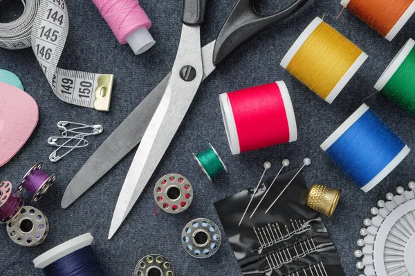
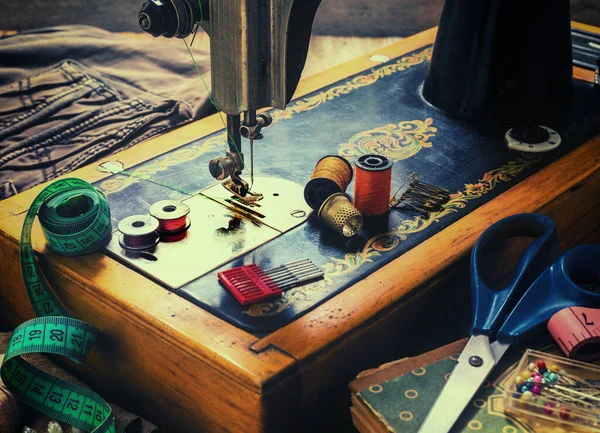

Herramientas y Materiales Esenciales
Andrea Castro, Feb 20,2026

Contamos con tijeras de tela, tijeras zig-zag, cortahílos,
descosedores y cortadores rotatorios para un corte preciso.
También ofrecemos cintas métricas, tizas, reglas de patronaje
y marcadores especiales para un trabajo profesional.
Leer más
Mercería, Maquinaria y Organización
Andrea Castro, Feb 20,2026

Disponemos de hilos de distintos materiales, agujas para mano
y máquina, botones, cierres, elásticos y accesorios variados.
Además, ofrecemos máquinas de coser, maniquíes, planchas
y organizadores que facilitan un espacio de trabajo eficiente.
Leer más
Ver más entradas